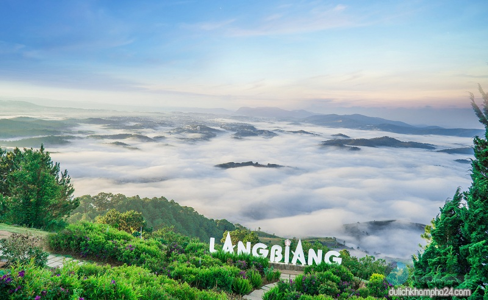
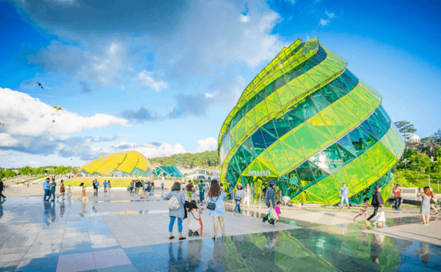
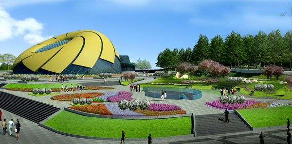
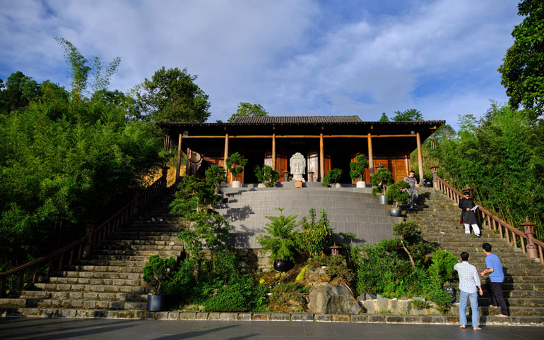
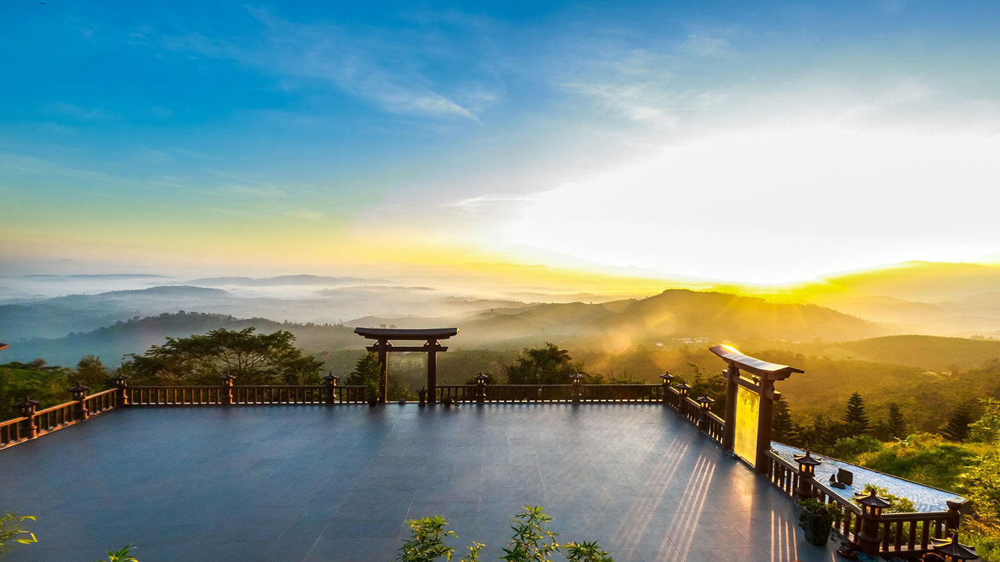
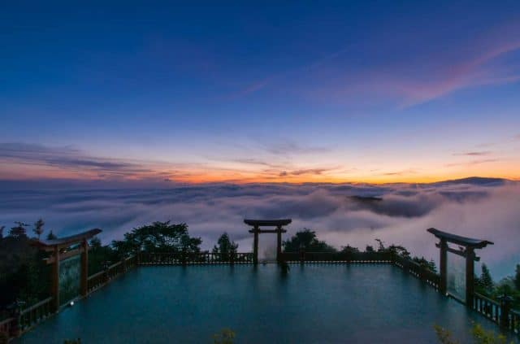
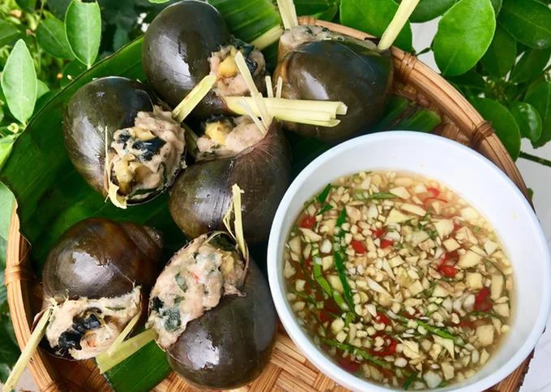
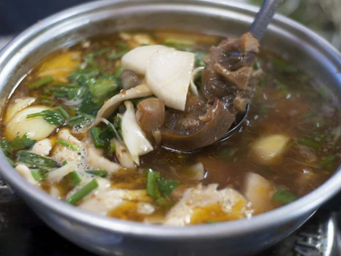
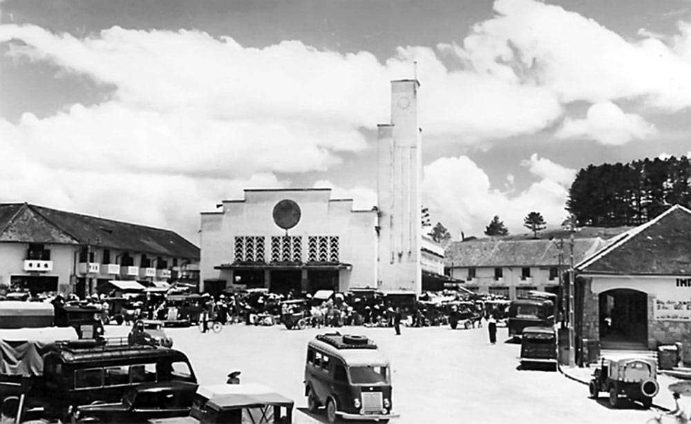

Giới thiệu
Là thành phố tỉnh lỵ của tỉnh Lâm Đồng, nằm trên cao nguyên Lâm Viên, thuộc vùng Tây Nguyên, Việt Nam.Với độ cao 1.500 mét so với mực nước biển và được các dãy núi cùng quần hệ thực vật rừng bao quanh, Đà Lạt thừa hưởng một khí hậu miền núi ôn hòa và dịu mát quanh năm. Lịch sử hơn một thế kỷ cũng để lại cho thành phố một di sản kiến trúc giá trị, được ví như một bảo tàng kiến trúc châu Âu thế kỷ XX. Những tài nguyên thiên nhiên và nhân văn phong phú giúp Đà Lạt trở thành một trong những điểm du lịch nổi tiếng của Việt Nam, mỗi năm thu hút hàng triệu du khách tới thăm viếng và nghỉ dưỡng. Đà Lạt còn là một trung tâm giáo dục và nghiên cứu khoa học, một thành phố đa dạng về tôn giáo với sự hiện diện của hàng trăm ngôi chùa, nhà thờ, tu viện... một vùng nông nghiệp trù phú đặc biệt với những sản phẩm rau và hoa. Nhờ khí hậu ôn hòa, cảnh quan thiên nhiên tươi đẹp và di sản kiến trúc phong phú, Đà Lạt còn được biết đến với nhiều tên gọi khác như "Thành phố mù sương", "Thành phố ngàn thông", "Thành phố ngàn hoa", "Xứ hoa Anh Đào" hay "Tiểu Paris"(wiki)


Các địa điểm văn hóa hay khu vui chơi di tích
1. Núi Langbiang
Địa chỉ: Núi LangBiang Đà Lạt nằm trên địa bàn huyện Lạc Dương, cách trung tâm thành phố ngàn hoa mộng mơ khoảng 12 km về phía bắc.
Không chỉ có quan cảnh đẹp, thơ mộng và lung linh. Mà ngọn núi này còn gắn liền với những truyền thuyết. Gắn liền với sự biểu trưng cho tình yêu bất diệt. Đặc biệt đó là truyền thuyết của người đồng bào dân tộc K’ho. Một truyền thuyết gắn liền với một tình yêu thủy chung son sắc của cặp đôi trai tài gái sắc. Đó chính là chàng K Lang và nàng H'Biang.
2. Quảng trường Lâm Viên
Địa chỉ : nằm ở đường Trần Quốc Toản, đối diện hồ Xuân Hương, Phường 10, trung tâm thành phố Đà Lạt, tỉnh Lâm Đồng.
Quảng trường Lâm Viên ở Đà Lạt được xây dựng từ năm 2009, phải thi công mất 6 năm công trình này mới hoàn thành và đi vào hoạt động vào năm 2016. Với kinh phí lên tới 681 tỷ đồng, công trình này được xem là một trong những công trình trọng điểm quan trọng của tỉnh Lâm Đồng.Quảng trường này có tổng diện tích lên tới hơn 70.000m2, mặt trước hướng ra Hồ Xuân Hương. Với vị trí đắc địa, không gian thoáng mát, cùng rất nhiều công trình kiến trúc độc đáo, quảng trường Lâm Viên Đà Lạt như điểm nhấn đầy ấn tượng của thành phố sương mù. Hằng năm, địa điểm này thu hút được rất nhiều du khách, đặc biệt là các bạn trẻ tới tham quan, vui chơi. Không những thế, nơi đây còn là địa điểm thường xuyên diễn ra những hoạt động cộng đồng, những sự kiện quan trọng của thành phố.

3. Chùa Linh quy Pháp Ấn

Địa chỉ: Chùa Linh Quy Pháp Ấn nằm ẩn hiện trên ngọn đồi 45, xã Lộc Thành, Thành phố Bảo Lộc, tỉnh Lâm Đồng.
Đây là một địa điểm chụp ảnh lý tưởng, đến đây không chỉ được ngoạn cảnh mà bạn có thể lưu lại những bức ảnh vô cùng “chất”. Nhiều khách du lịch chiêm ngưỡng cảnh vật qua những bức ảnh mà phải thốt lên “đây là cảnh ở Việt Nam sao, thật không thể tin”. Vì vậy địa điểm này thu hút rất nhiều bạn trẻ cũng như khách du lịch cả nước. Điểm nhấn của chùa
Linh Quy Pháp Ấn là cánh cổng Thần Đạo độc đáo. Có thể nói từ cánh cổng mở ra mọi khung cảnh góc nhìn thiên nhiên đặc trưng của Bảo Lộc. Có tất cả 3 cổng được bố trí xung quanh sân đá vuông có lan can.Khoảng sân này cũng là nơi diễn ra các nghi lễ trang nghiêm đầy linh thiêng.
 
Ẩm thực
1. Ốc Bươu Nhồi Thịt Đà Lạt
Đặc sản Đà Lạt nổi tiếng đa phần là những món nóng hổi “vừa thổi vừa ăn”; ốc bươu nhồi thịt là món ăn vặt ưa thích của cả người dân địa phương lẫn du khách. Ốc bươu được làm sạch, khử mùi tanh, được nhồi thịt heo xay nhuyễn tẩm gia vị vừa ăn, thêm vài cọng xả dậy mùi thơm rồi đem hấp. Thịt ốc luộc thơm lừng, dai dài, hòa cùng mùi sả đậm đà và nước chấm chua ngọt đích thị là "mỹ thực". Một quán ốc bươu nhồi thịt có thể làm thơm phức cả một góc phố..

2. Mì Quảng Đà Lạt
Có thể nói bên cạnh phở và bún bò, mì quảng xứng danh là “món ngon quốc dân” khi liên tục góp mặt trong danh sách đặc sản mọi vùng miền. Khác với phiên bản ở miền Trung, mì quảng Đà Lạt được chế biến đơn giản chỉ từ thịt heo nhưng vẫn giữ nguyên hương vị đậm đà của nước dùng, sợi mì dai mềm - cực kỳ “bắt vị” khi kết hợp cùng bánh đa nướng và đậu phộng rang giã nhuyễn.
3. Lẩu Bò Tơ Atiso Đà Lạt
Lẩu bò không phải món ăn xa lạ đối với thực khách gần xa. Thế nhưng phiên bản lẩu bò được biến tấu khi nấu cùng lá atiso lại khiến món ăn dân dã này trở nên đặc biệt hơn hẳn. Vẫn với nguyên liệu chính là thịt bò, nhưng nước lẩu được nấu thêm cùng với lá atiso trở nên thanh hơn, ngọt hơn rất nhiều. Hãy tự mình trải nghiệm nghe.

Lịch sử
Đà Lạt là thành phố tỉnh lỵ của tỉnh Lâm Đồng, nằm trên cao nguyên Lâm Viên, thuộc vùng Tây Nguyên, Việt Nam. Từ xa xưa, vùng đất này vốn là địa bàn cư trú của những cư dân người Lạch, người Chil và người Srê thuộc dân tộc Cơ Ho. Cuối thế kỷ 19, khi tìm kiếm một địa điểm để xây dựng trạm nghỉ dưỡng dành cho người Pháp ở Đông Dương, Toàn quyền Paul Doumer đã quyết định chọn cao nguyên Lâm Viên theo đề nghị của bác sĩ Alexandre Yersin, người từng thám hiểm tới nơi đây vào năm 1893. Trong nửa đầu thế kỷ 20, từ một địa điểm hoang vu, người Pháp đã quy hoạch và xây dựng lên một thành phố xinh đẹp với những biệt thự, công sở, khách sạn và trường học, một trung tâm du lịch và giáo dục của Đông Dương khi đó. Trải qua những khoảng thời gian thăng trầm của hai cuộc chiến tranh cùng giai đoạn khó khăn những thập niên 1970–1980, Đà Lạt ngày nay là một thành phố khá đông dân, đô thị loại I trực thuộc tỉnh, giữ vai trò trung tâm chính trị, kinh tế và văn hóa quan trọng của tỉnh Lâm Đồng và vùng Tây Nguyên, hướng đến là thành phố trực thuộc Trung ương vào năm 2030.
Núi Langbiang Đà Lạt là một trong những địa điểm tham quan, du lịch lâu đời bậc nhất tại Thành phố Đà Lạt. Không những vậy, ngọn núi này được mệnh danh là “nóc nhà của Đà Lạt”. Đứng trên đỉnh núi quý du khách có thể ngắm nhìn toàn cảnh Thành phố sương mù ở phía xa xa. Với một khung cảnh tuyệt đẹp, rất thơ mộng và lãng mạn.

Review khách sạn, homestay
1. Anh Homestay.
Địa chỉ: Đường Nguyễn Trung Trực, Phường 3, Thành phố Đà Lạt, Lâm Đồng.
Nằm trên một con dốc nhỏ tại thành phố Đà Lạt, Anh Homestay rât thuận tiện nếu du khách muốn đi tới các địa điểm nổi tiếng tại Đà Lạt như: Dinh Bảo Đại, Dinh Thự Hằng Nga, chợ Đà Lạt, Hồ Xuân Hương,…..Với phong cách sáng tạo trẻ trung đầy năng động, những gam màu hòa quyện vào nhau tạo nên một không gian độc đáo, nhiều góc sống ảo cho giới trẻ. Đặc biệt, Anh homestay còn được nhiều cặp đôi lựa chọn lưu trú không chỉ bởi sự tinh tế trong kiến trúc. Mà còn bởi giá tiền phải chăng, không gian phóng khoáng.Phòng nghỉ tại homestay cũng được thiết kế khá sạch sẽ, tiện nghi, đủ các đồ dùng cần thiết.Trong phòng nghỉ có thiết kế đẹp, sạch sẽ, đầy đủ các đồ dùng khi cần thiết. Chủ homestay thân thiện, dễ mến, nhiệt tình, sẵn sàng hỗ trợ bất cứ lúc nào nếu bạn cần.
Hơn nữa, homestay còn cho phép khách mang thú cưng vào mà không thu thêm bất kì phụ phí nào khác.
2. Éte Đà Lạt
Địa chỉ: 45 Phan Bội Châu, quận 1, Đà Lạt
Éte Đà Lạt là một homestay không thể nào lý tưởng hơn cho các cặp đôi yêu nhau. Với các vật dụng decor nhẹ nhàng, phong cách thiết kế vintage ngay từ cửa ra vào tới bên trong nhà. Tới đây, mình cảm nhận homestay thật ấm áp, nhẹ nhàng, cảm giác như đang ở trong một MV ca nhạc tình yêu nào đó vậy. Du khách còn có thể thoả sức “sống ảo” ở mọi góc tại homestay. “Chỉ nhìn là đã muốn ở”, đã rất nhiều người nhận xét như vậy trên các trang review.
Không chỉ đẹp về thiết kế, Éte homestay còn thuận lợi về cả vị trí địa lý, gần chợ Đà Lạt (cách 100m, chỉ cần đi bộ ra) là một lợi thế rất lớn đánh bại nhiều homestay, khách sạn tên tuổi khác quanh khu vực Đà Lạt. Ngoài ra, homestay chỉ cách Hồ Xuân Hương hơn 300m, cách dinh Bảo Đại, dinh thự Hằng Nga khoảng 2km – 3km. Các bạn có thể mua tour hoặc thuê xe máy tham quan các địa điểm du lịch nổi tiếng của Đà Lạt.
3. Làng Lá – Leaf Village – Đà Lạt.
Địa chỉ: 66 Đường An Bình, Phường 3, Thành phố Đà Lạt, Lâm Đồng.
Nếu bạn là người thích yên tĩnh, thư giãn, hãy tìm tới Làng Lá Homestay tại Đà Lạt. Với phong cách thiết kế hiện đại, mới lạ, nhưng tông màu của homestay lại đậm chất dân gian. Ngoài ra, homestay vừa ấm cúng lại tĩnh lặng, kết hợp với thời tiết se lạnh của Đà Lạt tháng 7 cùng những cơn mưa rào. Vô tình quyến rũ, làm xao xuyến mọi du khách khi tới lưu trú tại đây.
Đối với một không gian yên tĩnh như vậy, các bạn sẽ phải “chịu khó” một chút vì homestay nằm hơi xa trung tâm (Khoảng 2km – 3km). Nếu đi taxi ra Hồ Xuân Hương sẽ mất từ 30k – 40k/lượt. Hoặc các bạn có thể thuê xe máy tại homestay (Khoảng 120k – 150k/ngày) rồi tự đi khám phá Đà Lạt. Nếu có phương tiện đi lại, sẽ rất thuận lợi để các bạn thăm thú những địa điểm nổi tiếng như: Dinh Bảo Đại, Vườn hoa Yersin, các vườn dâu,….